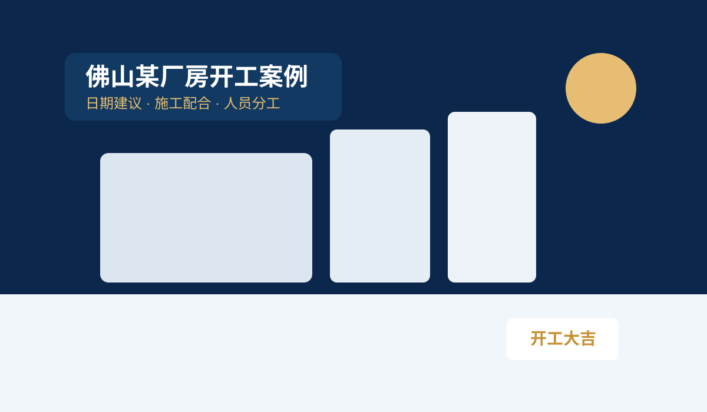
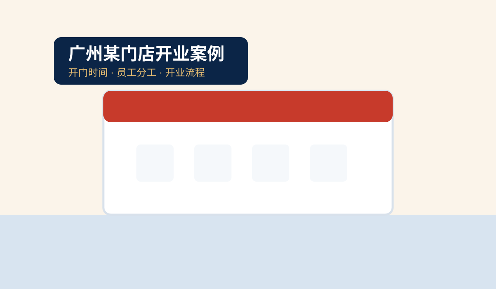
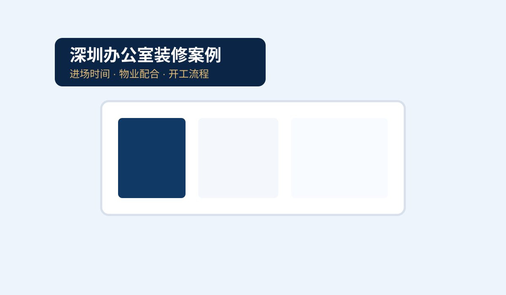

适用场景
聚焦商业开工，不是泛娱乐化咨询。
厂房开工
施工安排、负责人配合、开工时点建议。
门店开业
开门时间、员工分工、开业流程安排。
办公室装修
物业要求、施工进场、开工流程建议。
我们的服务承诺
择吉不是只选一个好日子
商业开业更需要一个完整的结合老板本人的操作规范流程。
先咨询，再判断
您可先进入咨询表单，再匹配 188、388 或 1288 的服务，手把手告诉您怎么做满仪式感。
赠送《开工流程指引》
页面内置赠送资料和弹窗，让您先感受到专业与清晰。
案例先看
案例中心单独成页，也可在首页预览，减少您的盲目感
方案价格
万事俱备，吉时开财！
资料初审
¥188
- 判断服务类型
- 确认所需资料
- 正式服务可抵扣
日期与时辰咨询
¥388
- 推荐日期
- 推荐时辰
- 简要注意事项（赠送个人运势简析）
完整开工流程方案
¥1288
- 日期 + 时辰建议
- 开工前准备清单
- 供品与人员分工
- 当天流程与注意事项（赠图观枫水）
上门指导 / 年度顾问
私人定制
- 上门流程指导
- 多项目安排
- 企业长期顾问
案例预览
目前放的是示意案例图，后续可替换成你的真实匿名案例。

厂房开工
佛山某厂房装修开工流程方案
客户重点：15 天内开工，涉及施工方进场、负责人协调、供品清单与开工流程安排。

门店开业
广州某门店开业日期与流程建议
客户重点：正式开业，希望把开门时间、员工安排、现场流程和注意事项一起安排好。

办公室装修
深圳某办公室装修开工安排案例
客户重点：装修进场时间、物业配合、负责人到场与开工位置需要同步确认。
免费领取《开工流程指引》
填写基础资料后，即可领取通用版《开业开工准备流程》，先了解准备事项、当天流程和常见错误。
客户常见问题
首页先放核心问题，后续还可以继续单独扩 FAQ 页。
开工是不是只看黄历就可以？
不是。商业开工需要结合项目类型、负责人安排、施工进度、现场条件等因素，重要项目建议将日期、时辰、流程和人员一起考虑。每位老板的生肖和运势时节不同，需要专属深度分析。
哪些项目适合做完整流程方案？
厂房、工地、门店正式开业、公司乔迁、搬厂入伙、办公室装修、工程奠基等商业场景更适合做完整流程方案。